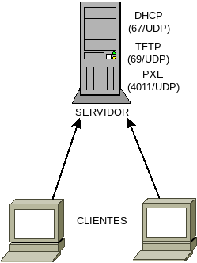
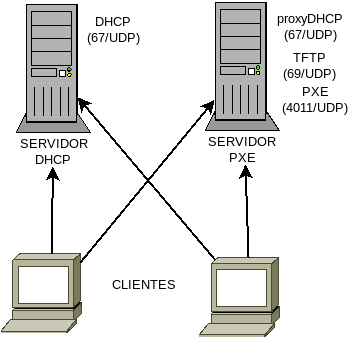

7.6.3.2. Servicios DHCP/PXE¶
7.6.3.2.1. 1º escenario¶
Como ya sabemos, en este primer escenario el servidor DHCP se encarga tanto de entregar la información de red como la información de arranque.
Para ello tenemos dos alternativas.
7.6.3.2.1.1. dnsmasq¶
Podemos implementar los datos del DHCP en el fichero
/etc/dnsmasq.d/dhcp.conf:
dhcp-range=192.168.255.128,192.168.255.191,8h
domain=aula.ies,192.168.255.0/24
y los referentes al arranque en /etc/dnsmasq.d/pxe.conf:
dhcp-boot=bios/lpxelinux.0
En este caso, sólo se da información sobre el fichero de configuración, ya que por defecto dnsmasq envía como IP del servidor de ficheros la propia del servidor DHCP. Si los ficheros los alojásemos en otro distinto, bastaría con añadirlo a la directiva a continuación:
dhcp-boot=bios/lpxelinux.0,192.168.255.2
Con esta configuración, dispondríamos un arranque gestionado con syslinux y en el que los ficheros se descargan por TFTP. Dado que los clientes PXE tradicionales no soportan otra descarga, es conveniente que así sea. Ahora bien, el NBP descargado (o sea, lpxelinux.0) sí la soporta por lo que es recomendable que el resto de las descargas se hagan por este medio[1], aunque no usemos la capacidad de ejecutar dinámicamente scripts para crear configuraciones según cliente. Para ello podemos enviar la opción 210:
dhcp-option-force=210,http://192.168.255.1/boot/bios/
que establece el directorio de trabajo y, además establece el protocolo de descarga. Podríamos añadir la opción 209 para indicar un fichero en concreto y no dejar que pxelinux haga la búsqueda de los nombres predeterminados, pero no haremos tal para seguir la estrategia que fijamos al definir la estructura de ficheros del servidor.
Como alternativa, podemos encapsular la opción dentro de la opción 43 lo que no obliga a forzar su envío:
dhcp-option=encap:43,210,http://192.168.255.1/boot/bios/
Consecuentemente, el fichero /etc/dnsmasq.d/pxe.conf nos quedará así:
dhcp-boot=bios/lpxelinux.0
# Si deseamoa continuar la descarga por HTTP
dhcp-option=encap:43,210,http://192.168.255.1/boot/bios/
Nota
Recuérdese que usamos también dnsmasq como servidor TFTP,
por lo que aún se requerirá otro fichero /etc/dnsmasq.d/tftp.conf
según los expuesto al explicar tal servicio para
habilitarlo.
7.6.3.2.1.2. isc-dhcp-server¶
Básicamente, consiste en traducir la configuración propuesta para dnsmasq:
authoritative;
ddns-update-style none;
default-lease-time 28800;
max-lease-time 28800;
include "/etc/dhcp/pxe.conf";
subnet 192.168.255.1 netmask 255.255.255.0 {
option domain-name-servers 192.168.255.1;
option domain-name "aula.ies";
option routers 192.168.255.1;
range 192.168.255.128 192.168.255.191;
}
Y en pxe.conf, incluimos la información del arranque:
next-server 192.168.255.1;
filename "bios/lpxelinux.0";
# Si deseamos continuar la descarga por HTTP
option pxe-pathprefix code 210 = text;
option pxe-pathprefix "http://192.168.255.1/boot/bios/";
if exists dhcp-parameter-request-list {
option dhcp-parameter-request-list = concat(option dhcp-parameter-request-list, d2);
}
que enviaría la opción 210. Si se prefiera encapsular dentro de la opción 43:
next-server 192.168.255.1;
filename "bios/lpxelinux.0";
# Si deseamos continuar la descarga por HTTP
option space pxe;
option local-encapsulation code 43 = encapsulate pxe;
option pxe.pathprefix code 210 = text;
option pxe.pathprefix "http://192.168.255.1/boot/bios/";
Nota
Tanto en este como en el segundo escenario, en los que somos capaces de manipular el servidor DHCP, es conveniente asociar a los clientes PXE un tiempo de concesión bastante corto, ya que por lo general el arranque en red apenas dura. Para dnsmasq podríamos definir las concesiones así:
dhcp-vendorclass=set:pxe,PXEClient
dhcp-range=tag:!pxe,192.168.255.128,192.168.255.191,8h
dhcp-range=tag:pxe,192.168.255.128,192.168.255.191,7m
En el del ISC requeriríamos simplemente, definir un tiempo de concesión más corto para los clientes PXE:
class "PXEClient" {
match if substring(option vendor-class-identifier, 0, 9) = "PXEClient";
default-lease-time 420;
}
Nota
Es conveniente hacer una puntualización sobre este escenario, ya sea el servidor dnsmasq o el del ISC. Dado que un servidor DHCP es capaz de identificar el tipo de máquina y definir, mediante la opción 209, el nombre del fichero de descarga, podríamos cambiar por completo la estrategia para crear configuraciones dinámicas. En nuestra propuesta el script PHP recibe en crudo la dirección MAC y su código debe encargarse de asociar la dirección con el tipo. En cambio, en este escenario y usando pxelinux como NBP, podríamos hacer una configuración en dnsmasq[2] de este tipo:
dhcp-host=00:25:22:*:*:*,set:clonicos
dhcp-host=74:D4:35:*:*:*,set:apd
dhcp-option=vendor:PXEClient,210,http://192.168.255.1/boot/bios/
dhcp-option=clonicos,vendor:PXEClient,209,script/boot.php?tipo=clonicos
dhcp-option=apd,vendor:PXEClient,209,script/boot.php?tipo=apd
De este modo, el script ya recibiría el tipo. Ahora bien, esto tiene dos limitaciones
Sólo vale cuando el NBP es syslinux.
Sólo vale en este escenario.
Es por ello que preferimos la solución más universal de pasar al script la MAC en crudo.
7.6.3.2.2. 2º escenario¶
En este escenario ambos servidores son independientes, pero se encuentran en la misma máquina:
El servidor DHCP escucha en el puerto 67/UDP y el servidor PXE en el puerto 4011/UDP. Ahora bien, el cliente no intenta automáticamente un descubrimiento de éste último servidor como sí hace con el de DHCP, sino que por DHCP espera obtener la información de dónde está.
El aviso de que el servidor PXE se encuentra en la misma máquina se da haciendo que DHCP envíe la opción 60 con la cadena «PXEClient». En consecuencia:
Separamos la información de red y la de arranque; pero
Necesitamos modificar la configuración del DHCP para incluir la opción 60.
Dado que estamos montando el PXE en la misma máquina que el servidor DHCP, es plausible pensar que somos capaces de modificar la configuración de éste último, por lo que la necesidad anterior no será problema.
Lo normal es que montemos el servidor del ISC como DHCP y dnsmasq como servidor PXE (y TFTP)[3].
Las ventajas de este escenario sobre el anterior son:
Separamos la información de ambos servidores.
Accedemos a las capacidades extra del servidor PXE (seleccionar entre distintos NBP de arranque).
Podemos hacer uso de la configuración extra que permite hacer ISC y no dnsmasq.
Las desventajas, en cambio, son:
Necesitamos montar dos servidores distintos[4].
No podemos enviar la opción 210 con el PXE y enviarla con el servidor DHCP es introducir información de arranque en el servicio DHCP, que es precisamente lo que queremos evitar al usar esta solucion.
7.6.3.2.2.1. DHCP¶
La configuración es básicamente la misma que para el primer escenario, pero sustituyen la información PXE por el envío de la opción 60:
authoritative;
ddns-update-style none;
default-lease-time 28800;
max-lease-time 28800;
option vendor-class-identifier "PXEClient";
subnet 192.168.255.1 netmask 255.255.255.0 {
option domain-name-servers 192.168.255.1;
option domain-name "aula.ies";
option routers 192.168.255.1;
range 192.168.255.128 192.168.255.191;
}
7.6.3.2.2.2. PXE¶
Para este servicio usaremos dnsmasq con dos ficheros de
configuración: tftp.conf, según lo ya expuesto para habilitar el
servicio TFTP y pxe.conf con este contenido:
# ProxyDHCP en otro alternativo.
dhcp-alternate-port=0
dhcp-range=192.168.255.0,proxy
dhcp-no-override
dhcp-option=vendor:PXEClient,6,2b
pxe-service=x86PC,"Servicio de clonaciones",bios/lpxelinux.0
Hay tres consideraciones interesantes:
No se usa
dhcp-boot, puesto que no se envía la información mediante el servicio DHCP, sinopxe-service.El servicio PXE no funciona en dnsmasq si no se habilita el serviicio proxyDHCP que ya introduciremos con el tercer escenario. Consecuentemente tenemos que habilitarlo. Ahora bien, este servicio funciona en el mismo puerto que el servicio DHCP. Para evitar el confilcto, hacemos que escuche en un puerto aleatorio libre con
dhcp-alternate-port.La directiva
pxe-servicepuede repetirse para enviar varios NBP disponibles al cliente y que este cree un menú de selección. No hacemos uso de ello, porque hemos decidido usar syslinux para tal tarea.
7.6.3.2.3. 3º escenario¶
En este último escenario disponemos el servidor PXE en una máquina distinta a la que corre el servidor DHCP. Muy comúnmente se debe a que no podemos tocar la máquina encargada de servir direcciones o, si podemos, no con total libertad. El ejemplo más habitual es que esta máquina sea un router con un sistema empotrado que apenas permite configuración alguna.
Dado que no podemos tocar el servicio DHCP, este no puede enviar al cliente aviso de que debe conectarse a un servidor PXE. Para paliar este inconveniente, se monta un servidor proxyDHCP que no es más que un servicio que escucha también en el puerto 67/UDP, por lo que recibe los paquetes DHCPdiscover del cliente, pero no envía configuración de red alguna en su paquete DHCPoffer, sino que se limita a enviar la opción 60 con el valor antes referido y, encapsulada en la opción 43, la dirección del servidor PXE. Un cliente PXE atiende también estos paquetes del proxyDHCP y hace a continuación una petición al puerto 4011/UDP de la IP referida para obtener la información de arranque. Es así como puede montarse el servicio de arranque sin necesidad de tocar en absoluto la configuración del DHCP.
Advertencia
Tenga en cuenta que el servidor PXE se encuentra en otra máquina,
de modo que si el servidor DHCP sigue siendo la 192.168.255.1, ella podrá
ser la 192.168.255.2. Tenga muy presente esto porque, si está usando
direcciones IP en la configuración, el fichero
/srv/tftp/bios/pxelinux.cfg/default que cambia el protocolo a
HTTP debe reflejar esta nueva IP.
7.6.3.2.3.1. DHCP¶
Simplemente, la configuración ya debe estar funcionado y servir un rango a los clientes que lo requieran. Obviamente, no debería ofrecer ninguna información sobre el arranque por red.
7.6.3.2.3.2. PXE¶
Como requerimos montar un servicio proxyDHCP sólo podemos usar
dnsmasq para la tarea. La configuración es exactamente la misma que
en el caso anterior con la salvedad de que evitamos usar la directiva
dhcp-alternate-port, ya que el servicio debe escuchar en el puerto propio
del DHCP:
dhcp-range=192.168.255.0,proxy
dhcp-no-override
dhcp-option=vendor:PXEClient,6,2b
pxe-service=x86PC,"Servicio de clonaciones",bios/lpxelinux.0
Nota
Recuérdese que también debemos habilitar el servidor TFTP.
Notas al pie